Для жары
Когда нужна лёгкая ткань, вентиляция и быстрое высыхание после нагрузки.
Показать подборкуСтраница помогает быстро понять, что брать для трекинга, бега, активной формы, хлопкового мерча или тёплых бафов. Сначала — короткий маршрут выбора, ниже — карточки тканей, а подробности раскрываются прямо в каталоге.
Если нет времени читать все описания, начните с готового сценария: жара, трекинг, хлопковый мерч или бафы. Карточка сразу покажет ткани, с которых стоит начать.
Когда нужна лёгкая ткань, вентиляция и быстрое высыхание после нагрузки.
Показать подборкуДля забега, клубного выезда или маршрута, где форма должна работать и быть заметной на фото.
Показать подборкуКогда вещь должны носить после события: мягкость, натуральная основа и чистый логотип важнее спортивной агрессии.
Показать подборкуКогда нужен аксессуар к форме: тонкий на старт или тёплый на прохладный маршрут.
Показать подборкуЭто не заменяет финальный подбор под модель и тираж, но помогает быстро сузить выбор перед заявкой.
| Задача | Сначала смотреть | Почему |
|---|---|---|
| Трекинг и горы | Coolmax, Эльбрус, Ника | Нужны лёгкость, влагоотведение, эластичность и комфорт под рюкзаком. |
| Жара и высокий пульс | Coolmax, Эльбрус, Ложная сетка | Влага уходит быстрее, ткань легче переносит интенсивную нагрузку. |
| Старт или командное событие | Coolmax, Ника, Прима | Легко собрать заметную форму для фото, события и регулярной носки. |
| Хлопковый мерч после поездки | Интерлок, кулирка | Комфортнее к телу, проще носить часто, хорошо подходят под логотипы и небольшой принт. |
| Бафы | Флис, Ника, Прима | Можно собрать тонкий аксессуар к форме или тёплый вариант для прохлады. |
Фильтр убирает лишнее, карточки остаются ровной сеткой, а состав, плотность, печать и назначение открываются в широкой плашке под выбранной строкой.
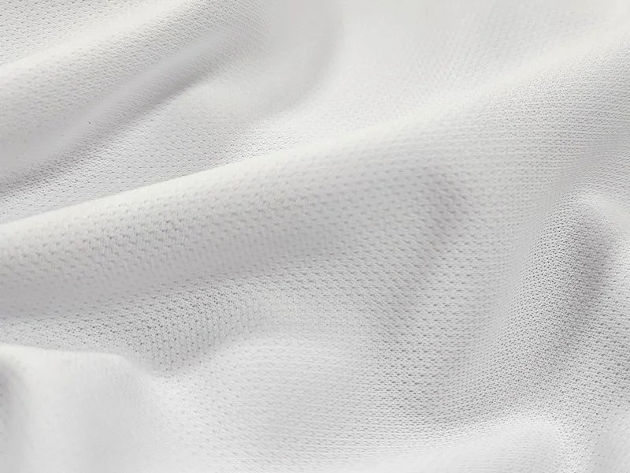
Мягкая база для трекинга, футболок и мерча, когда нужен яркий принт и комфортная носка.
Смотреть описание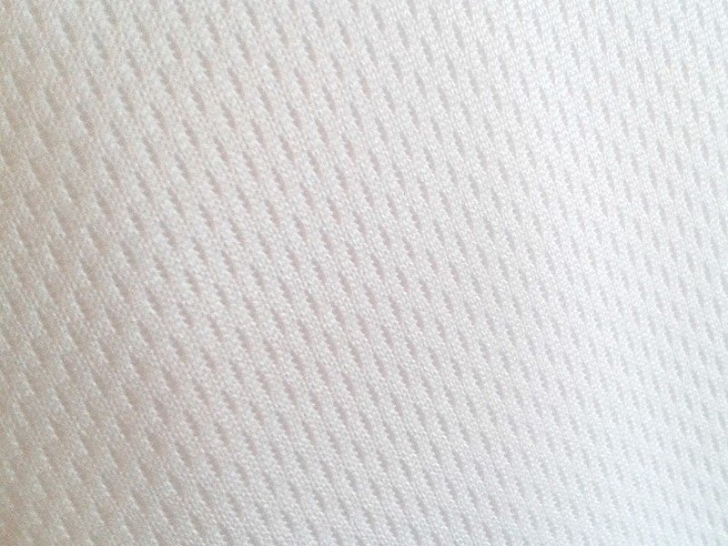
Ячеистая ткань для активной формы: быстро отдаёт влагу и хорошо пропускает воздух.
Смотреть описание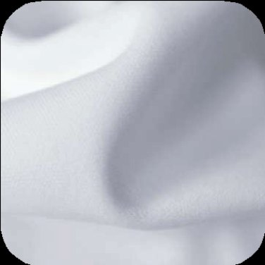
Гладкая, мягкая и износостойкая ткань из тонких микроволокон для чистой печати.
Смотреть описание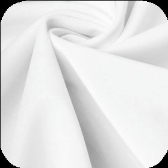
Если форма должна быстро выводить влагу наружу, хорошо тянуться и оставаться комфортной в жару.
Смотреть описание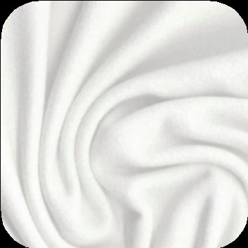
Эластичное полотно для посадки по телу, танцев, фитнеса и активного движения.
Смотреть описание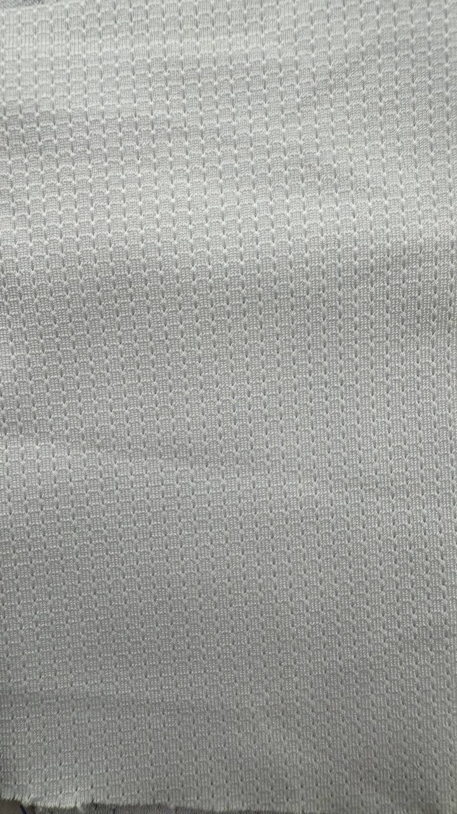
Лёгкая и дышащая ткань со сквозными ячейками, быстро сохнет и хорошо тянется.
Смотреть описание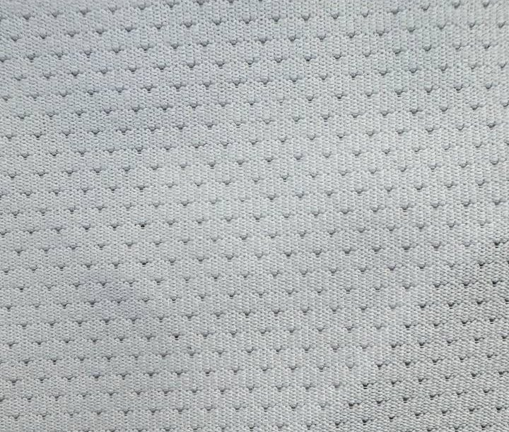
Похожа на Эльбрус по назначению, но отличается плотностью и размером ячейки.
Смотреть описание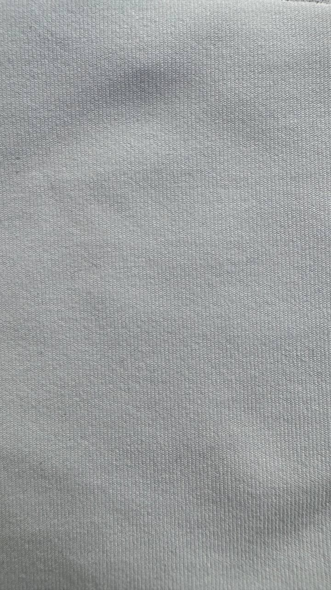
Плотный, мягкий и эластичный трикотаж с натуральной основой для носибельного мерча.
Смотреть описание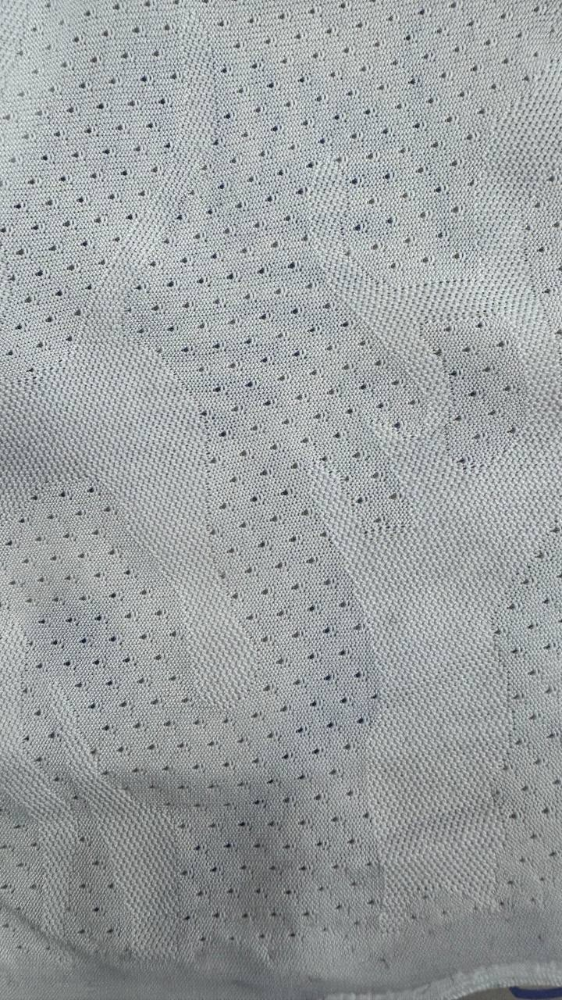
Матовая жаккардовая сетка с камуфляжной фактурой для интенсивной спортивной формы.
Смотреть описание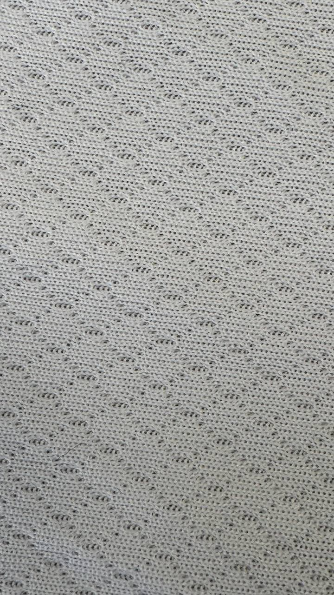
Плотное ячеистое полотно, которое отводит влагу и остаётся прочным в активной носке.
Смотреть описание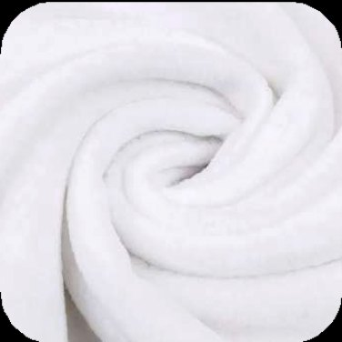
Мягкий, лёгкий и тёплый материал для бафов: быстро сохнет и сохраняет комфорт в прохладу.
Смотреть описаниеТонкий хлопковый трикотаж для лёгких футболок, повседневного мерча и вещей после поездки.
Смотреть описаниеНиже — подробности по каждой ткани: состав, плотность, где лучше применять и какие свойства важны для заказа.
Полиэфирное трикотажное полотно с пористой несквозной структурой. Ткань средней растяжимости, мягкая, комфортная в носке и хорошо подходит для трекинга, футболок и командного мерча.
Используется как основа для сублимационной печати: держит яркое изображение, не мнётся, быстро сохнет и помогает отводить влагу при активной нагрузке.
Ячеистая полиэфирная ткань с хорошей растяжимостью. Структура помогает воздуху проходить через полотно, а влаге — быстро испаряться во время интенсивного движения.
Материал используют для активной спортивной одежды, командной формы и тренировочных комплектов. Подходит для сублимационной печати.
Полиэфирное трикотажное полотно интерлочного переплетения, сотканное из тонких микроволокон. Материал гладкий, мягкий, приятный на ощупь, хорошо тянется и не деформируется.
Подходит для повседневной и спортивной одежды, промофутболок, фанатской атрибутики и изделий, где важны мягкость, износостойкость и чистая поверхность под печать.
Трикотажное полотно со структурой волокон, которая быстро забирает влагу с тела и переносит её наружу для испарения. По ощущениям близко к мягкому хлопку, но лучше держит форму и быстрее сохнет.
В составе есть лайкра, поэтому ткань хорошо тянется и комфортнее работает в движении. Это хороший вариант для футболок, беговой формы, трекинга и изделий для жаркой погоды, где важны влагоотведение, посадка и стабильность после стирок.
Материал, который может растягиваться в несколько раз больше обычного размера. Его удобно рассматривать для изделий, где ткань должна работать вместе с телом и не сковывать движение.
Подходит для танцев, фитнеса, облегающих элементов формы и задач, где важны высокая растяжимость, посадка и свобода движения.
Лёгкая дышащая ткань со сквозными ячейками. Быстро сохнет, хорошо проветривается и остаётся очень эластичной.
Подходит для спортивной формы, бега, тренировок и изделий, где нужны вентиляция, небольшая плотность и свобода движения.
Сетчатая ткань, близкая по назначению к Эльбрусу, но отличающаяся плотностью и размером ячейки. Хорошо подходит для спортивных изделий, где нужна вентиляция и эластичность.
Её удобно выбирать, когда хочется сохранить дышащие свойства сетки, но получить другую фактуру и плотность полотна.
Плотный, мягкий и эластичный трикотаж премиального качества с гладкой поверхностью с обеих сторон. Мягче и эластичнее обычного полиэстера, при этом сохраняет свойства натуральной основы.
Изнанка имеет сотовую текстуру, которая помогает поглощать влагу, поддерживать приятное ощущение в носке и делать ткань более «дышащей».
Трикотажное матовое полотно с двухсторонним жаккардовым плетением и камуфляжной фактурой. Ячеистая структура помогает вентиляции и отведению влаги.
3D-рисунок при печати изображения даёт ткани более оригинальный внешний вид. Подходит для профессиональной спортивной экипировки, командной формы и интенсивных нагрузок.
Полиэфирное трикотажное полотно несквозной ячеистой структуры, произведённое по технологии CoolPass. Отводит влагу от тела и помогает сохранять сухость во время движения.
Трикотаж плотный и прочный, хорошо растягивается в поперечном направлении. Применяется для баскетбольной, футбольной, хоккейной и другой спортивной формы, а также для повседневной одежды.
Мягкий на ощупь материал с хорошими теплоизоляционными свойствами. В ткани не накапливается влага, она быстро сохнет и остаётся сухой и тёплой даже при повышенной влажности.
Подходит для тёплых бафов и аксессуаров на прохладную погоду. Может быть основой для сублимационной печати по задаче.
Тонкий хлопковый трикотаж для лёгких футболок, повседневной одежды и мерча, который участники будут носить после поездки или события.
Кулирку лучше рассматривать для спокойных базовых изделий, где важны мягкость и натуральное ощущение. Для спортивной формы с активной нагрузкой чаще выбираем полиэфирные ткани.